소방설비기사(기계분야) (2021-05-15 기출문제)
1과목: 소방원론
1. 내화건축물과 비교한 목조건축물 화재의 일반적인 특징을 옳게 나타낸 것은?
- 고온, 단시간형
- 저온, 단시간형
- 고온, 장시간형
- 저온, 장시간형
(정답률: 82%)

2. 다음 중 증기 비중이 가장 큰 것은?
- Halon 1301
- Halon 2402
- Halon 1211
- Halon 104
(정답률: 72%)
3. 화재발생 시 피난기구로 직접 활용할 수 없는 것은?
- 완강기
- 무선통신보조설비
- 피난사다리
- 구조대
(정답률: 84%)
4. 정전기에 의한 발화과정으로 옳은 것은?
- 방전 → 전하의 축적 → 전하의 발생 → 발화
- 전하의 발생 → 전하의 축적 → 방전 → 발화
- 전하의 발생 → 방전 → 전하의 축적 → 발화
- 전하의 축적 → 방전 → 전하의 발생 → 발화
(정답률: 76%)
5. 물리적 소화방법이 아닌 것은?
- 산소공급원 차단
- 연쇄반응 차단
- 온도 냉각
- 가연물제거
(정답률: 77%)
6. 탄화칼슘이 물과 반응할 때 발생되는 기체는?
- 일산화탄소
- 아세틸렌
- 황화수소
- 수소
(정답률: 74%)
7. 분말소화약제 중 A급, B급, C급 화재에 모두 사용할 수 있는 것은?
- 제1종 분말
- 제2종 분말
- 제3종 분말
- 제4종 분말
(정답률: 80%)
8. 조연성 가스에 해당하는 것은?
- 수소
- 일산화탄소
- 산소
- 에탄
(정답률: 76%)
9. 분자내부에 니트로기를 갖고 있는 TNT, 니트로셀룰로오스 등과 같은 제5류 위험물의 연소 형태는?
- 분해연소
- 자기연소
- 증발연소
- 표면연소
(정답률: 77%)
10. 가연물질의 종류에 따라 화재를 분류하였을 때 섬유류 화재가 속하는 것은?
- A급 화재
- B급 화재
- C급 화재
- D급 화재
(정답률: 78%)
11. 위험물안전관리법령상 제6류 위험물을 수납하는 운반용기의 외부에 주의사항을 표시하여야 할 경우, 어떤 내용을 표시하여야 하는가?
- 물기엄금
- 화기엄금
- 화기주의/충격주의
- 가연물 접촉주의
(정답률: 57%)
12. 다음 연소 생성물 중 인체에 독성이 가장 높은 것은?
- 이산화탄소
- 일산화탄소
- 수증기
- 포스겐
(정답률: 74%)
13. 알킬알루미늄 화재에 적합한 소화약제는?
- 물
- 이산화탄소
- 팽창질석
- 할로겐화합물
(정답률: 76%)
14. 열전도도(thermal conductivity)를 표시하는단위에 해당하는 것은?
- J/m2・h
- kcal/h・℃2
- W/m・K
- J・K/m3
(정답률: 63%)
15. 위험물안전관리법령상 위험물에 대한설명으로 옳은 것은?
- 과염소산은 위험물이 아니다.
- 황린은 제2류 위험물이다.
- 황화린의 지정수량은 100 kg이다.
- 산화성고체는 제6류 위험물의 성질이다.
(정답률: 65%)
16. 제3종 분말소화약제의 주성분은?
- 인산암모늄
- 탄산수소칼륨
- 탄산수소나트륨
- 탄산수소칼륨과 요소
(정답률: 75%)
17. 이산화탄소 소화기의 일반적인 성질에서 단점이 아닌 것은?
- 밀폐된 공간에서 사용 시 질식의 위험성이 있다.
- 인체에 직접 방출 시 동상의 위험성이 있다.
- 소화약제의 방사 시 소음이 크다.
- 전기가 잘 통하기 때문에 전기설비에 사용할 수 없다.
(정답률: 81%)
18. IG-541 이 15℃에서 내용적 50리터 압력용기에 155kgf/cm2으로 충전되어 있다. 온도가 30℃가 되었다면 IG-541 압력은 약 몇 kgf/cm2가 되겠는가? (단, 용기의 팽창은 없다고 가정한다.)
- 78
- 155
- 163
- 310
(정답률: 55%)
19. 소화약제 중 HFC-125의 화학식으로 옳은 것은?
- CHF2CF3
- CHF3
- CF3CHFCF3
- CF3I
(정답률: 66%)
20. 프로판 50vol%, 부탄 40vol%, 프로필렌 10vol%로 된 혼합가스의 폭발하한계는 약 몇 vol% 인가? (단, 각 가스의 폭발하한계는 프로판은 2.2vol%, 부탄은 1.9vol%, 프로필렌은 2.4vol%이다.)
- 0.83
- 2.09
- 5.⑤
- 9.44
(정답률: 68%)
2과목: 소방유체역학
21. 직경 20cm의 소화용 호스에 물이 392 N/s 흐른다. 이 때의 평균유속(m/s)은?
- 2.96
- 4.34
- 3.68
- 1.27
(정답률: 50%)
22. 수은이 채워진 U자관에 수은보다 비중이 작은 어떤 액체를 넣었다. 액체기둥의 높이가 10cm, 수은과 액체의 자유 표면의 높이 차이가 6cm일 때 이 액체의 비중은? (단, 수은의 비중은 13.6 이다.)
- 5.44
- 8.16
- 9.63
- 10.88
(정답률: 36%)
23. 수압기에서 피스톤의 반지름이 각각 20cm와 10cm이다. 작은 피스톤에 19.6N의 힘을 가하는 경우 평형을 이루기 위해 큰 피스톤에는 몇 N의 하중을 가하여야 하는가?
- 4.9
- 9.8
- 68.4
- 78.4
(정답률: 38%)
24. 그림과 같이 중앙부분에 구멍이 뚫린 원판에 지름 D의 원형 물제트가 대기압 상태에서 V의 속도로 충돌하여 원판 뒤로 지름 D/2의 원형 물제트가 V의 속도로 홀러나가고 있을 때, 이 원판이 받는 힘을 구하는 계산식으로 옳은 것은? (단, ρ는 물의 밀도이다.)
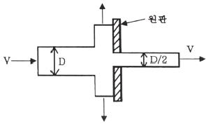
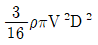
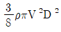
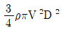
- 3ρπV2D2
(정답률: 50%)
25. 압력 0.1MPa, 온도 250℃ 상태인 물의 엔탈피가 2974.33 kJ/kg이고 비체적은 2.40604m3/kg이다. 이 상태에서 물의 내부에너지(kJ/kg)는 얼마인가?
- 2733.7
- 2974.1
- 3214.9
- 3582.7
(정답률: 29%)
26. 300 K의 저온 열원을 가지고 카르노 사이클로 작동하는 열기관의 효율이 70%가 되기 위해서 필요한 고온 열원의 온도(K)는?
- 800
- 900
- 1000
- 1100
(정답률: 39%)
27. 물이 들어 있는 탱크에 수면으로부터 20m 깊이에 지름 50mm 의 오리피스가 있다. 이 오리피스에서 흘러나오는 유량(m3/min)은?(단, 탱크의 수면 높이는 일정하고 모든 손실은 무시한다.)
- 1.3
- 2.3
- 3.3
- 4.3
(정답률: 50%)
28. 다음 중 열전달 매질이 없이도 열이 전달되는 형태는?
- 전도
- 자연대류
- 복사
- 강제대류
(정답률: 57%)
29. 양정 220m, 유량 0.025m3/s, 회전수 2900rpm인 4단 원심 펌프의 비교회전도 (비속도)[m3/min, m, rpm]는 얼마인가?
- 176
- 167
- 45
- 23
(정답률: 30%)
30. 동력(power)의 차원을 MLT(질량 M, 길이 L, 시간 T)계로 바르게 나타낸 것은?
- MLT-1
- M2LT-2
- ML2T-3
- MLT-2
(정답률: 57%)
31. 직사각형 단면의 덕트에서 가로와 세로가 각각 a 및 1.5a이고, 길이가 L이며, 이 안에서 공기가 V의 평균속도로 흐르고 있다. 이 때 손실수두를 구하는 식으로 옳은 것은? (단, f는 이 수력지름에 기초한 마찰계수이고, g는 중력가속도를 의미한다.)
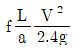
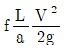
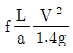
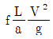
(정답률: 47%)
32. 무차원수 중 레이놀즈수(Reynolds number)의 물리적인 의미는?
- 관성력/중력
- 관성력/탄성력
- 관성력/점성력
- 관성력/음속
(정답률: 66%)
33. 동일한 노즐구경을 갖는 소방차에서 방수압력이 1.5배가 되면 방수량은 몇 배로되는가?
- 1.22 배
- 1.41 배
- 1.52 배
- 2.25 배
(정답률: 40%)
34. 전양정 80m, 토출량 500 L/min인 물을 사용하는 소화펌프가 있다. 펌프효율 65%, 전달계수(K) 1.1인 경우 필요한 전동기의 최소동력(kW)은?
- 9
- 11
- 13
- 15
(정답률: 55%)
35. 안지름 10cm인 수평 원관의 층류유동으로 4km 떨어진 곳에 원유(점성계수 0.02 N・s/m2, 비중 0.86)를 0.10 m3/min의 유량으로 수송하려 할 때 펌프에 필요한 동력(W)은? (단, 펌프의 효율은 100%로 가정한다.)
- 76
- 91
- 10900
- 9100
(정답률: 29%)
36. 유속 6m/s로 정상류의 물이 화살표 방향으로 흐르는 배관에 압력계와 피토계가 설치되어있다. 이때 압력계의 계기압력이 300 kPa이었다면 피토계의 계기압력은 약 몇 kPa인가?
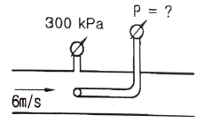
- 180
- 280
- 318
- 336
(정답률: 47%)
37. 유체의 압축률에 관한 설명으로 올바른 것은?
- 압축률 = 밀도 × 체적탄성계수
- 압축률 = 1/체적탄성계수
- 압축률 = 밀도/체적탄성계수
- 압축률 = 체적탄성계수/밀도
(정답률: 51%)
38. 질량이 5㎏인 공기(이상기체)가 온도 333K로 일정하게 유지되면서 체적이 10배가 되었다. 이 계(system)가 한 일(kJ)은? (단, 공기의 기체상수는 287J/kg·K이다.)
- 220
- 478
- 1100
- 4779
(정답률: 27%)
39. 무한한 두 평판 사이에 유체가 채워져 있고 한 평판은 정지해 있고 또 다른 평판은 일정한 속도로 움직이는 Couette 유동을 하고 있다. 유체 A만 채워져 있을 때 평판을 움직이기 위한 단위면적당 힘을 τ1이라 하고 같은 평판 사이에 점성이 다른 유체 B만 채워져 있을 때 필요한 힘을 τ2라 하면 유체 A와 B가 반반씩 위아래로 채워져 있을 때 평판을 같은 속도로 움직이기 위한 단위면적당 힘에 대한 표현으로 옳은 것은?
- τ1+τ2/2
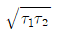
- 2τ1τ2/τ1+τ2
- τ1+τ2
(정답률: 47%)
40. 2m 깊이로 물이 차있는 물 탱크 바닥에 한 변이 20cm인 정사각형 모양의 관측창이 설치되어 있다. 관측창이 물로 인하여 받는 순 힘(net force)은 몇 N인가? (단, 관측창 밖의 압력은 대기압이다.)
- 784
- 392
- 196
- 98
(정답률: 39%)
3과목: 소방관계법규
41. 소방기본법의 정의상 소방대상물의 관계인이 아닌 자는?
- 감리자
- 관리자
- 점유자
- 소유자
(정답률: 66%)
42. 소방기본법령상 화재의 예방상 위험하다고 인정되는 행위를 하는 사람에게 행위의 금지 또는 제한 명령을 할 수 있는 사람은?
- 소방본부장
- 시·도지사
- 의용소방대원
- 소방대상물의 관리자
(정답률: 63%)
43. 위험물안전관리법령상 취급하는 위험물의 최대수량이 지정수량의 10배 이하인 경우 공지의 너비 기준은? (문제 오류로 가답안 발표시 4번으로 발표되었지만 확정 답안 발표시 모두 정답처리 되었습니다. 여기서는 가답안인 4번을 누르면 정답 처리 됩니다.)
- 2m 이하
- 2m 이상
- 3m 이하
- 3m 이상
(정답률: 66%)
44. 위험물안전관리법령상 제조소 또는 일반 취급소에서 취급하는 제4류 위험물의 최대수량의 합이 지정수량의 48만배 이상인사업소의 자체소방대에 두는 화학소방자동차 및 인원기준으로 다음 ( ) 안에 알맞은 것은?
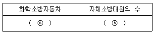
- ⓐ 1대, ⓑ 5인
- ⓐ 2대, ⓑ 10인
- ⓐ 3대, ⓑ 15인
- ⓐ 4대, ⓑ 20인
(정답률: 54%)
45. 소방기본법령상 특수가연물의 저장 및 취급기준이 아닌 것은? (단, 석탄/목탄류를 발전용으로 저장하는 경우는 제외)
- 품명별로 구분하여 쌓는다.
- 쌓는 높이는 20m 이하가 되도록 한다.
- 쌓는 부분의 바닥면적 사이는 1m 이상이 되도록 한다.
- 특수가연물을 저장 또는 취급하는 장소에는 품명·최대수량 및 화기취급의 금지 표지를 설치해야 한다.
(정답률: 61%)
46. 화재예방, 소방시설 설치·유지 및 안전관리에 관한 법령상 소화설비를 구성하는 제품 또는 기기에 해당하지 않는 것은?
- 가스누설경보기
- 소방호스
- 스프링클러헤드
- 분말자동소화장치
(정답률: 58%)
47. 소방기본법령상 출동한 소방대원에게 폭행 또는 협박을 행사하여 화재진압 인명구조 또는 구급활동을 방해한 사람에 대한 벌칙 기준은?
- 500만원 이하의 과태료
- 1년 이하의 징역 또는 1000만원 이하의 벌금
- 3년 이하의 징역 또는 3000만원 이하의 벌금
- 5년 이하의 징역 또는 5000만원 이하의 벌금
(정답률: 55%)
48. 화재예방, 소방시설 설치·유지 및 안전관리에 관한 법령상 건축허가 등의 동의 대상물의 범위로 틀린 것은?
- 항공기 격납고
- 방송용 송·수신탑
- 연면적이 400제곱미터 이상인 건축물
- 지하층 또는 무창층이 있는 건축물로서 바닥면적이 50제곱미터 이상인 층이 있는 것
(정답률: 51%)
49. 소방시설공사업법령에 따른 완공검사를 위한 현장확인 대상 특정소방대상물의 범위기준으로 틀린 것은?
- 연면적 1만제곱미터 이상이거나 11층이상인 특정소방대상물(아파트는 제외)
- 가연성가스를 제조·저장 또는 취급하는 시설 중 지상에 노출된 가연성가스탱크의 저장용량 합계가 1천톤 이상인 시설
- 호스릴 방식의 소화설비가 설치되는 특정소방대상물
- 문화 및 집회시설, 종교시설, 판매시설, 노유자시설, 수련시설, 운동시설, 숙박시설, 창고시설, 지하상가
(정답률: 59%)
50. 화재예방, 소방시설 설치·유지 및 안전관리에 관한 법령상 스프링클러설비를 설치하여야 할 특정소방대상물에 다음 중 어떤 소방시설을 화재안전기준에 적합하게 설치하면 면제 받을 수 있는가? (문제 오류로 가답안 발표시 2번으로 발표되었지만 확정 답안 발표시 1, 2, 4번이 정답처리 되었습니다. 여기서는 가답안인 2번을 누르면 정답 처리 됩니다.)
- 포소화설비
- 물분무소화설비
- 간이스프링클러설비
- 이산화탄소소화설비
(정답률: 69%)
51. 화재예방, 소방시설 설치·유지 및 안전관리에 관한 법령상 대통령령 또는 화재안전기준이 변경되어 그 기준이 강화되는 경우 기존 특정 소방대상물의 소방시설 중 강화된 기준을 설치장소와 관계없이 항상 적용하여야 하는 것은? (단, 건축물의 신축·개축·재축·이전 및 대수선중인 특정소방대상물을 포함한다.)
- 제연설비
- 비상경보설비
- 옥내소화전설비
- 화재조기진압용 스프링클러설비
(정답률: 61%)
52. 화재예방, 소방시설 설치·유지 및 안전관리에 관한 법령상 시·도지사가 소방시설 등의 자체점검을 하지 아니한 관리업자에게 영업정지를 명할 수 있으나, 이로 인해 국민에게 심한 불편을 줄 때에는 영업정지처분을 갈음하여 과징금 처분을 한다. 과징금의 기준은?(관련 규정 개정전 문제로 여기서는 기존 정답인 3번을 누르면 정답 처리됩니다. 자세한 내용은 해설을 참고하세요.)
- 1000만원 이하
- 2000만원 이하
- 3000만원 이하
- 5000만원 이하
(정답률: 60%)
53. 위험물안전관리법령상 위험물별 성질로서 틀린 것은?
- 제1류 : 산화성 고체
- 제2류 : 가연성 고체
- 제4류 : 인화성 액체
- 제6류 : 인화성 고체
(정답률: 70%)
54. 화재예방, 소방시설 설치·유지 및 안전관리에 관한 법령상 소방시설등의 종합정밀점검 대상기준에 맞게 ( )에 들어갈 내용으로 옳은 것은?
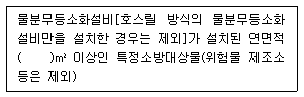
- 2000
- 3000
- 4000
- 5000
(정답률: 44%)
55. 화재예방, 소방시설 설치·유지 안전관리에 관한 법령상 펄프공장의 작업장, 음료수공장의 충전을 하는 작업장 등과 같이 화재안전기준을 적용하기 어려운 특정소방대상물에 설치하지 아니할 수 있는 소방시설의 종류가 아닌 것은?
- 상수도소화용수설비
- 스프링클러설비
- 연결송수관설비
- 연결살수설비
(정답률: 30%)
56. 소방기본법령에 따른 특수가연물의 기준 중 다음 ( ) 안에 알맞은 것은?
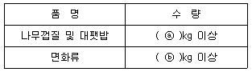
- ⓐ 200, ⓑ 400
- ⓐ 200, ⓑ 1000
- ⓐ 400, ⓑ 200
- ⓐ 400, ⓑ 1000
(정답률: 53%)
57. 화재예방, 소방시설 설치·유지 및 안전관리에 관한 법령상 소방특별조사위원회의 위원에 해당하지 아니하는 사람은?
- 소방기술사
- 소방시설관리사
- 소방 관련 분야의 석사학위 이상을 취득한 사람
- 소방 관련 법인 또는 단체에서 소방 관련업무에 3년 이상 종사한 사람
(정답률: 64%)
58. 위험물안전관리법령상 소화 난이도 등급 I 의 옥내탱크저장소에서 유황만을 저장·취급 할 경우 설치하여야 하는 소화설비로 옳은 것은?
- 물분무소화설비
- 스프링클러설비
- 포소화설비
- 옥내소화전설비
(정답률: 52%)
59. 소방시설공사업법령상 하자보수를 하여야하는 소방시설 중 하자보수 보증기간이 3년이 아닌 것은?
- 자동소화장치
- 비상방송설비
- 스프링클러설비
- 상수도소화용수설비
(정답률: 65%)
60. 소방기본법령상 소방대장은 화재, 재난·재해 그 밖의 위급한 상황이 발생한 현장에 소방활동구역을 정하여 소방활동에 필요한 자로서 대통령령으로 정하는 사람 외에는 그 구역에의 출입을 제한할 수 있다. 다음 중 소방활동구역에 출입할 수 없는 사람은?
- 소방활동구역 안에 있는 소방대상물의 소유자·관리자 또는 점유자
- 전기·가스·수도·통신·교통의 업무에 종사하는 사람으로서 원활한 소방활동을 위하여 필요한 사람
- 시·도지사가 소방활동을 위하여 출입을 허가한 사람
- 의사·간호사 그 밖의 구조·구급업무에 종사하는 사람
(정답률: 49%)
4과목: 소방기계시설의 구조 및 원리
61. 화재조기진압용 스프링클러설비의 화재안전기준상 헤드의 설치기준 중 ( )안에 알맞은 것은?
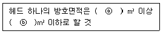
- ⓐ 2.4, ⓑ 3.7
- ⓐ 3.7, ⓑ 9.1
- ⓐ 6.0, ⓑ 9.3
- ⓐ 9.1, ⓑ 13.7
(정답률: 39%)
62. 분말소화설비의 화재안전기준상 수동식 기동장치의 부근에 설치하는 비상스위치에 대한 설명으로 옳은 것은?
- 자동복귀형 스위치로서 수동식 기동장치의 타이머를 순간정지 시키는 기능의 스위치를 말한다.
- 자동복귀형 스위치로서 수동식 기동장치가 수신기를 순간정지 시키는 기능의 스위치를 말한다.
- 수동복귀형 스위치로서 수동식 기동장치의 타이머를 순간정지 시키는 기능의 스위치를 말한다.
- 수동복귀형 스위치로서 수동식 기동장치가 수신기를 순간정지 시키는 기능의 스위치를 말한다.
(정답률: 58%)
63. 할론소화설비의 화재안전기준상 화재표시반의 설치 기준이 아닌 것은?
- 소화약제 방출지연 비상스위치를 설치할 것
- 소화약제의 방출을 명시하는 표시등을 설치할 것.
- 수동식 기동장치는 그 방출용 스위치의 작동을 명시하는 표시등을 설치할 것
- 자동식 기동장치는 자동・수동의 절환을 명시하는 표시등을 설치할 것
(정답률: 35%)
64. 피난기구의 화재안전기준상 노유자 시설의 4층 이상 10층 이하에서 적응성이 있는 피난기구가 아닌 것은?
- 피난교
- 다수인피난장비
- 승강식피난기
- 미끄럼대
(정답률: 63%)
65. 분말소화설비의 화재안전기준상 다음 ( )안에 알맞은 것은?
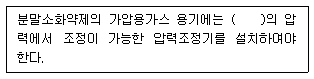
- 2.5 MPa 이하
- 2.5 MPa 이상
- 25 MPa 이하
- 25 MPa 이상
(정답률: 48%)
66. 스프링클러설비의 화재안전기준상 개방형스프링클러설비에서 하나의 방수구역을 담당하는 헤드의 개수는 최대 몇 개 이하로 해야 하는가? (단, 방수구역은 나누어져 있지 않고 하나의 구역으로 되어 있다.)
- 50
- 40
- 30
- 20
(정답률: 58%)
67. 연결살수설비의 화재안전기준상 배관의 설치기준 중 하나의 배관에 부착하는 살수헤드의 개수가 3개인 경우 배관의 구경은 최소 몇 mm 이상으로 설치해야 하는가? (단, 연결살수설비 전용 헤드를 사용하는 경우이다.)
- 40
- 50
- 65
- 80
(정답률: 50%)
68. 이산화탄소소화설비의 화재안전기준상 수동식 기동장치의 설치기준에 적합하지 않은 것은?
- 전역방출방식에 있어서는 방호대상물마다 설치
- 전기를 사용하는 기동장치에는 전원표시등을 설치할 것
- 기동장치의 조작부는 바닥으로부터 높이 0.8m 이상 1.5m 이하의 위치에 설치하고, 보호판 등에 따른 보호장치를 설치할 것
- 기동장치의 방출용 스위치는 음향경보장치와 연동하여 조작될 수 있는 것으로 할 것
(정답률: 55%)
69. 옥내소화전설비의 화재안전기준상 옥내소화전펌프의 후드밸브를 소방용 설비외의 다른 설비의 후드밸브보다 낮은 위치에 설치한 경우의 유효수량으로 옳은 것은? (단, 옥내소화전설비와 다른 설비 수원을 저수조로 겸용하여 사용한 경우이다.)
- 저수조의 바닥면과 상단 사이의 전체 수량
- 옥내소화전설비 후드밸브와 소방용 설비외의 다른 설비의 후드밸브 사이의 수량
- 옥내소화전설비의 후드밸브와 저수조 상단 사이의 수량
- 저수조의 바닥면과 소방용 설비 외의 다른 설비의 후드밸브 사이의 수량
(정답률: 46%)
70. 포소화설비의 화재안전기준상 포소화설비의 배관 등의 설치기준으로 옳은 것은?
- 포워터스프링클러설비 또는 포헤드설비의 가지 배관의 배열은 토너먼트방식으로 한다.
- 송액관은 겸용으로 하여야 한다. 다만, 포소화전의 기동장치의 조작과 동시에 다른 설비의 용도에 사용하는 배관의 송수를 차단할 수 있거나, 포소화설비의 성능에 지장이 없는 경우에는 전용으로 할 수 있다.
- 송액관은 포의 방출 종료 후 배관안의 액을 배출하기 위하여 적당한 기울기를 유지하도록 하고 그 낮은 부분에 배액밸브를 설치하여야 한다.
- 연결송수관설비의 배관과 겸용할 경우의 주배관은 구경 65 mm 이상, 방수구로 연결되는 배관의 구경은 100 mm 이상의 것으로 하여야 한다.
(정답률: 57%)
71. 물분무소화실비의 화재안전기준상 송수구의 설치기준으로 틀린 것은?
- 구경 65mm 의 쌍구형으로 할 것
- 지면으로부터 높이가 0.5m 이상 1m 이하의 위치에 설치할 것
- 송수구는 하나의 층의 바닥면적이 1500m2를 넘을 때마다 1개(5개를 넘을 경우에는 5개로 한다) 이상을 설치할 것
- 가연성가스의 저장・취급시설에 설치하는 송수구는 그 방호대상물로부터 20m 이상의 거리를 두거나 방호대상물에 면하는 부분이 높이 1.5m 이상, 폭 2.5m 이상의 철근콘크리트 벽으로 가려진 장소에 설치할 것
(정답률: 53%)
72. 미분무소화설비의 화재안전기준상 미분무소화설비의 성능을 확인하기 위하여 하나의 발화원을 가정한 설계도서 작성 시 고려하여야 할 인자를 모두 고른 것은?
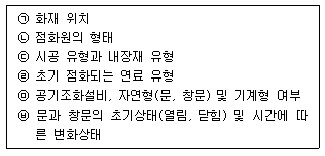
- ㉠, ㉢, ㉥
- ㉠, ㉡, ㉢, ㉤
- ㉠, ㉡, ㉣, ㉤, ㉥
- ㉠, ㉡, ㉢, ㉣, ㉤, ㉥
(정답률: 49%)
73. 특별피난계단의 계단실 및 부속실 제연설비의 화재안전기준상 차압 등에 관한 기준 중 다음 괄호 안에 알맞은 것은?
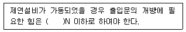
- 12.5
- 40
- 70
- 110
(정답률: 58%)
74. 포소화설비의 화재안전기준상 펌프의 토출관에 압입기를 설치하여 포 소화약제 압입용 펌프로 포 소화약제를 압입시켜 혼합하는 방식은?
- 라인 푸로포셔너 방식
- 펌프 푸로포셔너 방식
- 프레져 푸로포셔너 방식
- 프레져사이드 푸로포셔너 방식
(정답률: 60%)
75. 소화기구 및 자동소화장치의 화재안전기준에 따라 다음과 같이 간이소화용구를 비치하였을 경우 능력 단위의 합은?
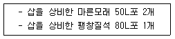
- 1 단위
- 1.5 단위
- 2.5 단위
- 3 단위
(정답률: 60%)
76. 소화수조 및 저수조의 화재안전기준상 연면적이 40000m2인 특정소방대상물에 소화용수설비를 설치하는 경우 소화수조의 최소 저수량은 몇 m3인가? (단, 지상 1층 및 2층의 바닥면적 합계가 15000m2 이상인 경우이다.)
- 53.3
- 60
- 106.7
- 120
(정답률: 32%)
77. 소화기구 및 자동소화장치의 화재안전기준에 따른 용어에 대한 정의로 틀린 것은?
- "소화약제"란 소화기구 및 자동소화장치에 사용되는 소화성능이 있는 고체・액체 및 기체의 물질을 말한다.
- "대형소화기”란 화재 시 사람이 운반할 수 있도록 운반대와 바퀴가 설치되어 있고 능력 단위가 A급 20단위 이상, B급 10단위 이상인 소화기를 말한다.
- "전기화재(C급 화재)”란 전류가 흐르고 있는 전기기기, 배선과 관련된 화재를 말한다.
- "능력단위"란 소화기 및 소화약제에 따른 간이소화용구에 있어서는 소방시설법에 따라 형식승인 된 수치를 말한다.
(정답률: 66%)
78. 옥내소화전설비의 화재안전기준상 배관 등에 관한 설명으로 옳은 것은?
- 펌프의 토출측 주배관의 구경은 유속이 5m/s 이하가 될 수 있는 크기 이상으로 하여야 한다.
- 연결송수관설비의 배관과 겸용할 경우의 주배관은 구경 80mm 이상, 방수구로 연결되는 배관의 구경은 65mm 이상의 것으로 하여야 한다.
- 성능시험배관은 펌프의 토출측에 설치된 개폐밸브 이전에서 분기하여 설치하고, 유량측정장치를 기준으로 전단 직관부에 개폐밸브를 후단 직관부에는 유량조절밸브를 설치하여야 한다.
- 가압송수장치의 체절운전 시 수온의 상승을방지하기 위하여 체크밸브와 펌프사이에서 분기한 구경 20mm 이상의 배관에 체절압력 이상에서 개방되는 릴리프밸브를 설치하여야 한다.
(정답률: 52%)
79. 소화전함의 성능인증 및 제품검사의 기술기준상 옥내 소화전함의 재질을 합성수지 재료로 할 경우 두께는 최소 몇 mm 이상이어야 하는가?
- 1.5
- 2.0
- 3.0
- 4.0
(정답률: 43%)
80. 소화설비용 헤드의 성능인증 및 제품검사의 기술기준상 소화설비용 헤드의 분류 중 수류를 살수판에 충돌하여 미세한 물방울을 만드는 물분무헤드 형식은?
- 디프렉타형
- 충돌형
- 슬리트형
- 분사형
(정답률: 63%)
목조건축물 화재는 일반적으로 고온, 단시간형이다. 이는 목재의 빠른 연소와 높은 열방출로 인해 발생한다. 또한 목재는 내화성이 낮기 때문에 내화건축물에 비해 더 높은 온도에서 빠르게 연소되며, 화재 발생 후 진화가 어렵다는 특징이 있다. 따라서 목조건축물의 화재 예방과 대처는 매우 중요하다.